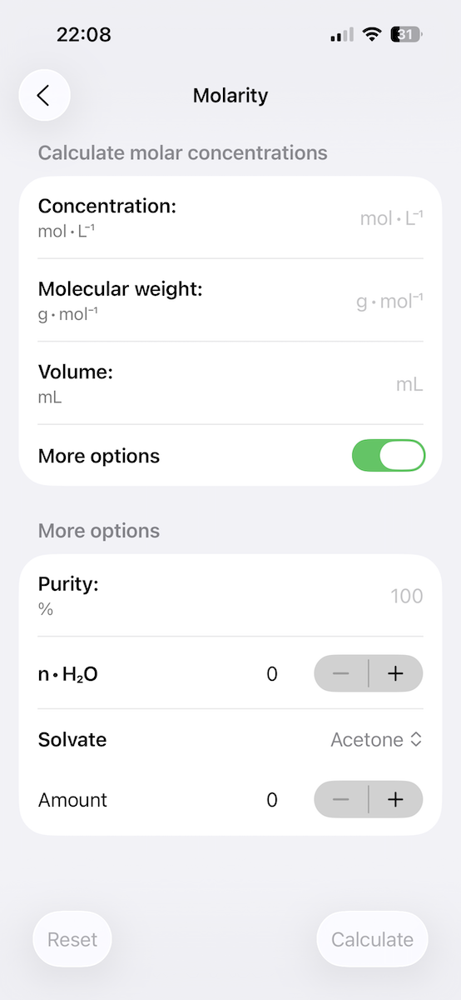
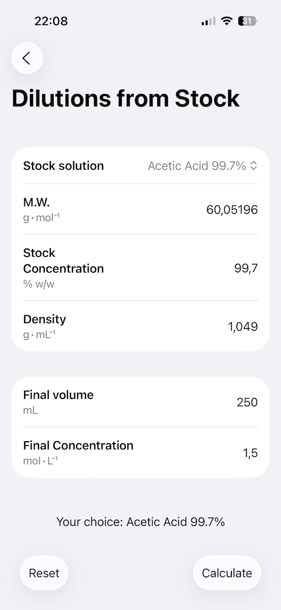
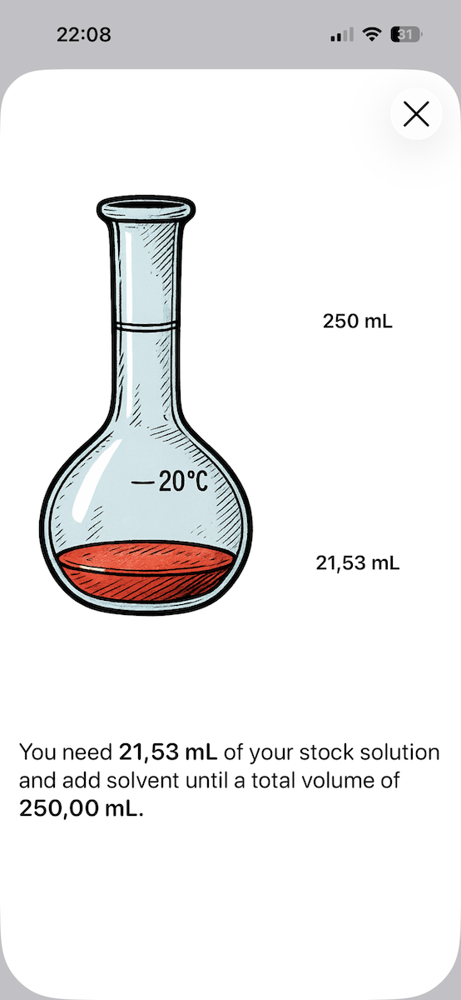

<style>
    /* Header */
    header {
        padding: 100px 30px 80px;
        text-align: center;
        background: #fafbfc;
    }
    
    h1 {
        font-size: 3.2em;
        margin-bottom: 20px;
        font-weight: 600;
        color: #1a1a1a;
        letter-spacing: -0.5px;
    }
    
    .subtitle {
        font-size: 1.3em;
        color: #5a6c7d;
        margin-bottom: 15px;
        font-weight: 400;
    }
    
    .meta {
        font-size: 1em;
        color: #7a8a9a;
        margin-bottom: 40px;
    }
    
    .download-btn {
        display: inline-block;
        background: #000000;
        color: white;
        padding: 14px 40px;
        text-decoration: none;
        border-radius: 8px;
        font-weight: 500;
        font-size: 1em;
        transition: background 0.2s;
    }
    
    .download-btn:hover {
        background: #333333;
    }
    
    /* Main Content */
    section {
        padding: 70px 30px;
    }
    
    section:nth-child(even) {
        background: #fafbfc;
    }
    
    h2 {
        font-size: 2em;
        margin-bottom: 40px;
        font-weight: 600;
        color: #1a1a1a;
        text-align: center;
    }
    
    /* Features */
    .features-list {
        max-width: 800px;
        margin: 0 auto;
    }
    
    .feature {
        margin-bottom: 50px;
    }
    
    .feature h3 {
        font-size: 1.4em;
        margin-bottom: 12px;
        color: #2c3e50;
        font-weight: 600;
    }
    
    .feature p {
        font-size: 1.05em;
        color: #5a6c7d;
        line-height: 1.7;
    }
    
    /* Calculations */
    .calc-grid {
        display: grid;
        grid-template-columns: repeat(auto-fit, minmax(280px, 1fr));
        gap: 20px;
        max-width: 900px;
        margin: 0 auto;
    }
    
    .calc-item {
        background: #ffffff;
        border: 1px solid #e0e0e0;
        padding: 25px;
        border-radius: 6px;
        font-size: 1.05em;
        color: #2c3e50;
    }
    
    section:nth-child(even) .calc-item {
        background: #ffffff;
    }
    
    /* Screenshots */
    .screenshot-grid {
        display: flex;
        justify-content: center;
        gap: 30px;
        flex-wrap: wrap;
        margin-top: 50px;
    }
    
    .screenshot-placeholder {
        width: 240px;
        height: 520px;
        border-radius: 20px;
        box-shadow: 0 4px 12px rgba(0,0,0,0.1);
    }
    
    @media (max-width: 768px) {
        h1 {
            font-size: 2.2em;
        }
        
        .subtitle {
            font-size: 1.1em;
        }
        
        h2 {
            font-size: 1.6em;
        }
    }
</style>

<!-- Header -->
<header>
    <div class="container">
        
        <h1>Concentrations</h1>
        <p class="subtitle">Chemical Calculator for iOS</p>
        <p class="meta">Free • No Ads • No Data Collection</p>
        <a href="https://apps.apple.com/de/app/concentrations/id468150886?l=en-GB" class="download-btn">Download on the App Store</a>
    </div>
</header>

<!-- About -->
<section>
    <div class="container">
        <h2>Purpose</h2>
        <div class="features-list">
            <div class="feature">
                <p>Concentrations is a straightforward calculator designed for chemistry students and laboratory professionals. It eliminates manual calculation errors and speeds up routine lab work. The application requires no account, collects no data, and functions purely as a computational tool.</p>
            </div>
        </div>
    </div>
</section>

<!-- Why I Made This -->
<section>
    <div class="container">
        <h2>About This Project</h2>
        <div class="features-list">
            <div class="feature">
                <p>I developed Concentrations as a personal project and mental exercise. As someone who frequently worked with chemical calculations, I wanted to create a tool that would simplify these routine tasks. The project served as both a practical solution to a real problem and an opportunity to develop my programming skills.</p>
                <p>The app remains free and ad-free because it was never intended as a commercial venture. It's simply a useful tool that I'm sharing with students and professionals who might benefit from it. No monetization, no data collection, no complexity—just a calculator that does what it's supposed to do.</p>
            </div>
        </div>
    </div>
</section>

<!-- Features -->
<section>
    <div class="container">
        <h2>Features</h2>
        <div class="features-list">
            <div class="feature">
                <h3>For Students</h3>
                <p>Designed with high school and undergraduate chemistry students in mind. Covers all standard concentration calculations required in coursework and laboratory sessions.</p>
            </div>
            <div class="feature">
                <h3>For Laboratory Staff</h3>
                <p>Quick reference tool for preparing solutions and performing dilutions. Reduces time spent on repetitive calculations during routine lab operations.</p>
            </div>
            <div class="feature">
                <h3>Customizable Interface</h3>
                <p>Configure the application's appearance according to your preferences. Adapts to different working environments and lighting conditions.</p>
            </div>
            <div class="feature">
                <h3>Privacy Focused</h3>
                <p>No user accounts. No data collection. No analytics. The application operates entirely offline and stores no information about your calculations or usage patterns.</p>
            </div>
        </div>
    </div>
</section>

<!-- Calculations -->
<section>
    <div class="container">
        <h2>Supported Calculations</h2>
        <div class="calc-grid">
            <div class="calc-item">Molarity (M)</div>
            <div class="calc-item">Molality (m)</div>
            <div class="calc-item">Normality (N)</div>
            <div class="calc-item">Mole Fraction</div>
            <div class="calc-item">Volume Fraction (mL/mL)</div>
            <div class="calc-item">Mass Fraction (g/g)</div>
            <div class="calc-item">Mass Concentration (g/100mL)</div>
            <div class="calc-item">Stock Solution Dilutions</div>
            <div class="calc-item">Direct Dilutions</div>
        </div>
    </div>
</section>

<!-- Screenshots -->
<section>
    <div class="container">
        <h2>Interface</h2>
        <div class="screenshot-grid">
            
            
            
            
        </div>
    </div>
</section>
